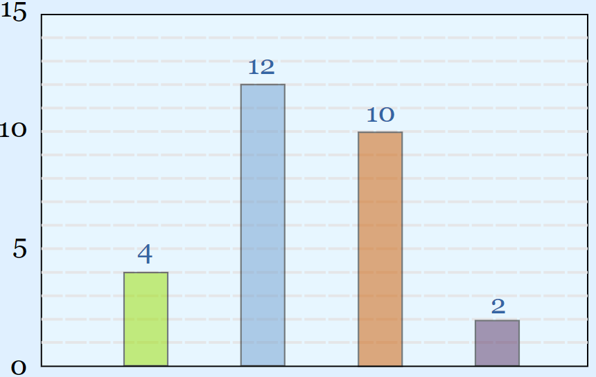

2020.02.10
 Source: adopted from here
{kind=link}
Introduction¶
Let's go one step further by continuing the question from last week. A question asked by algorithmic traders quite often is how many open orders are live on market at any given time.
Question¶
Find the time series of the number of open child orders. The question from last week is simply a special case of this question. The output is a table with two columns like below:
| startTime | nOpenOrders |
|---|---|
| 09:30:00.000 | 0 |
| hh:mm:ss.SSS | x |
| hh:mm:ss.SSS | y |
| hh:mm:ss.SSS | z |
Answer¶
The child order count should increase by 1 at each order's submission time (subT) and decrease by 1 when the
order is removed from the market at exit time (exitT). Based on this reasoning logic, three tables are created:
- The first table contains one row, which has order count of zero to accommodate the time period from market open to the time when the first child order is created.
- The second table contains all new orders.
- The third table records all orders which are removed from market.
Along this line of thinking, the following implementation is suggested:
initOrder:([] time:enlist openTime;nOpenOrders:enlist 0);
addOrder:select time:subTime,nOpenOrders:1 from simOrders;
removeOrder:select time:exitTime,nOpenOrders:-1 from simOrders;
orders:select time,sums nOpenOrders from `time xasc initOrder,addOrder,removeOrder;
select time,nOpenOrders from orders where differ nOpenOrders
The where differ nOpenOrders on the last line above is required to make sure the order count between two consecutive rows are different.